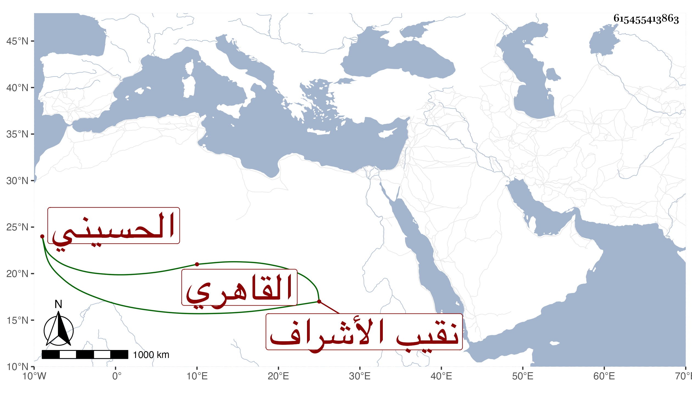

0902Sakhawi.DawLamic.ITO20230111-ara1.EIS1600.615455413863
Biography ID: 615455413863
547
حسين بن أبي بكر بن حسن البدر الحسيني القاهري نقيب الأشراف وأخو ناصر الدين محمد أحد فضلاء الحنفية ، ويلقب بالشاطر ويقال له ابن الفراء . أيضا استقر في نقابة الأشراف في جمادى الآخرة سنة أربع وأربعين بعد صرف حسن ابن علي بن أحمد بن علي الماضي وما تمت السنة حتى قام بعمارة مشهد السيدة رقية بالقرب من المشهد النفيسي للاحتواء على سكناه بحيث تعطلت زيارته من سنين وشكر له ذلك ولكنه اشتد تساهله في إدخال الناس في الشرف طمعا في اليسير فانحط مقداره سيما مع عاميته ونقصه . مات في شوال سنة خمس وثمانين وقد أسن بع إخراج النظر عنه للسيد علي الكردي ، واستقر بعده في النقابة محمد ابن حسن الحسني خازن الشربخاناه
